Trace the dependencies
See how a requirement becomes a lesson, an experiment and a checkable claim.
Technical graphs
Each graph has a text table with the same nodes and links. The arrows show dependency, evidence support, or learning order.
Choose a five minute route · Choose a standard route · Choose a deep route
Task dependencies
Confirm identity and scope first. Run experiments and the site work in parallel only when their inputs stay fixed. Integrate, audit, then retest the combined result.
| From | Edge | To | Record or check |
|---|---|---|---|
| Identity | defines entity and scope for | Research | Identity cases and their source rows. |
| Research | sets evidence and acceptance inputs for | Experiments | Research method and benchmark protocol. |
| Research | sets page claims and citations for | Site | Catalog and source records. |
| Experiments | and Site provide separate outputs to | Integration | Replay commands and hashes. |
| Integration | creates a combined revision for | Audit | Check linked fragments and run guide verification. |
| Audit | lists findings that require | Retest | Rerun checks after any repair. Local evidence: trial 1 metrics, trial 2 metrics. |
Open folding task map
Parallel work is safe only while experiment inputs and site source claims remain independent. Recheck all links after integration. A passing isolated branch does not prove the combined page or code works.
Evidence and claims
Read each edge as a specific relation. Source evidence supports method claims. Lab records support observed results. Contradictions narrow claims when evidence does not support a broader conclusion.

| From | Relation | To | What the record supports |
|---|---|---|---|
| E03 | describes evaluation design and limits | Benchmark replay record | Replay ran fixed seeds and preserved outputs. See trial 1 metrics and trial 2 metrics. |
| Benchmark metrics | show full rule excels on ordinary rows but falls on shifted rows | Test for shift sensitivity | Full totals: 290/300 ordinary, 86/300 shifted. Sensor-only totals: 251/300 and 249/300. Source rows: trial 1 errors, trial 2 errors. |
| E01 and E02 | describe harness and recovery practices | Local workflow | State and verified output support safe restart in this synthetic workflow. Check trial 1 state and trial 2 state. |
| Queue source CSV | contradicts counting every old row as open | Queue draft | R06 is nine days old but closed. The draft excludes it. Verify against trial 2 draft. |
| E07 | describes release comparison signals | Invoice service tests | Local tests check exact behavior. The source does not set a production release threshold. |
| Baseline code | returns 216 cents where acceptance requires 217 | Updated implementation and regression test | Local mismatch supports exact integer rounding in this service. It does not measure model quality. |
Open folding evidence map
Claim to source links
| Recommendation | Source | Local check | Limit |
|---|---|---|---|
| Map the repository before edits | E01 | Engineering orientation | Practice described by source, not a measured gain for this guide. |
| Keep progress state for long tasks | E02 | Checkpoint loop | Local workflow has no concurrent writer lock or hung-tool timeout. |
| Define evaluation before interpreting scores | E03 | Synthetic benchmark | Three seeds do not establish real-world performance. |
| Compare release signals before broad rollout | E07 | Release section | Set thresholds from product risk and local data. |
| Use parallel workers only for independent outputs | E09 | Task dependency graph | Coordination can raise aggregate token use. |
| Prefer a workflow when steps are known | E11 | Typed report workflow | The deterministic lab does not measure live model behavior. |
Other engineering sources inform work design and cost. E04 and E05 concern developer productivity measurement. E06 documents Git worktrees. E08 covers prompt caching. E10 describes long-running application harness design. E12 reports a parallel compiler project. These sources do not establish the cost or speed of this guide's labs.
Learning prerequisites and outcomes
Read the rule, inspect a worked artifact, then retrieve it from memory and transfer it to a new case. Each route links back to the matching graph and lab.


| Prerequisite | Next step | Practice artifact | Retrieval or transfer outcome |
|---|---|---|---|
| Foundations: tools, state, checks | Engineering path | Invoice regression | Retrieve the rounding rule; transfer it to a delivery-fee contract. |
| Single worker or team | Research path | Badge shift comparison | Retrieve the split and baseline; transfer to a ticket classifier with a changed shortcut signal. |
| State and stop rules | Business path | Support queue draft | Retrieve the open and aged filters; transfer to inventory exceptions with row citations. |
| Complete one practice task | Test recall without notes | Test design prompt or Handoff prompt | Explain one rule, then apply it to new inputs. |
Open folding learning map
Open the quick path · Open the standard path · Open the deep path